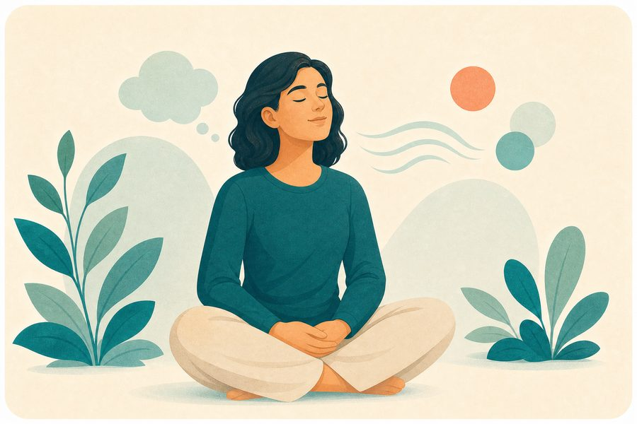

Anxiety awareness questionnaire
A seven-question Arabic survey about anxiety over the past two weeks, providing an educational, non-diagnostic result.

How to read the result?
The result is an awareness indicator based on your answers, not a diagnosis or final judgment. If symptoms persist or affect your life, book an appointment with your doctor or an appropriate specialist.
Source of the original tool
Frequently asked questions about the awareness anxiety questionnaire
Brief answers to help you understand the tool's limitations and use it more wisely.
What time period does the anxiety questionnaire cover?
It asks awareness questions about anxiety over the past two weeks and helps note the impact on daily life.
Does the questionnaire result diagnose an anxiety disorder?
No. It is an educational self-check, not a diagnosis. Diagnosis requires discussion and assessment by a mental health professional.
What should I do if anxiety affects my day?
Note what you observe and talk with a trusted person or a professional, and seek professional help if anxiety persists or disrupts sleep, work, or relationships.
When should I seek urgent help?
If there's an immediate safety risk or thoughts of harming yourself, call emergency services or contact local support services right away — do not rely on the questionnaire.